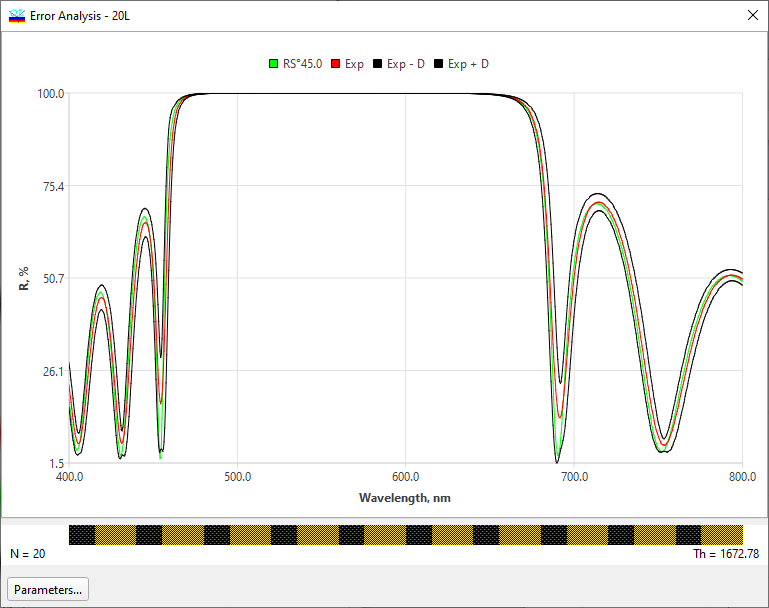

Error Analysis
Error Analysis
Navigation: OptiLayer Menu Commands > Analysis Menu > Errors Analysis >
Error Analysis
` <idh_error_analysis_setup_refra.html>`__ ` <idh_error_analysis.html>`__ ` <color_error_analysis.html>`__
This window is displayed after the Error Analysis command in the Analysis menu is invoked. This computational procedure provides a statistical evaluation of the effect that errors in layer thicknesses and refractive indices in a design will have on the spectral response of a designated spectral characteristic. As the computations proceed, a sequence of curves corresponding to the number of statistical tests is plotted on the screen. During the computations, the progress of the statistical procedure is indicated by a percentage bar at the bottom of the window. At the conclusion of the computational procedure, the original (theoretical) spectral characteristic is plotted on the screen. It is accompanied by the mathematical expectation (denoted as “Exp” in the window legend) and two curves indicating the probability corridor for a given error level (these curves are denoted as “Exp±D” in the legend). The width of the probability corridor corresponds to the magnitude of the errors that were set in the Error Analysis Setup.

At the bottom of this window, the value of the Merit function is presented. Also, there is a value E(dMF) describing the expected variations of the merit function. We calculate this value by the following procedure.
First, we create a new artificial target as a copy of the initial target loaded into memory, but replace all target values with the corresponding values provided by the theoretical design. This new artificial target may be interpreted as a measure of the deviations of actual spectral characteristics from the theoretical ones. The corresponding merit function is designated as dMF. It is clear that dMF computed for the theoretical design must be equal to zero by definition.
Second, we compute the mathematical expectation of the dMF values when the error analysis procedure is over. This value can be considered an estimation of merit function deviations from the optimal value due to specified manufacturing errors.
Numerical estimation of possible variations is very helpful for the comparison of sensitivities of different theoretical designs to manufacturing errors. Related topics: